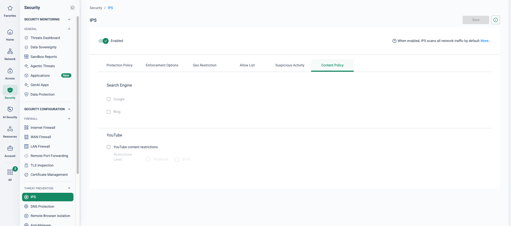
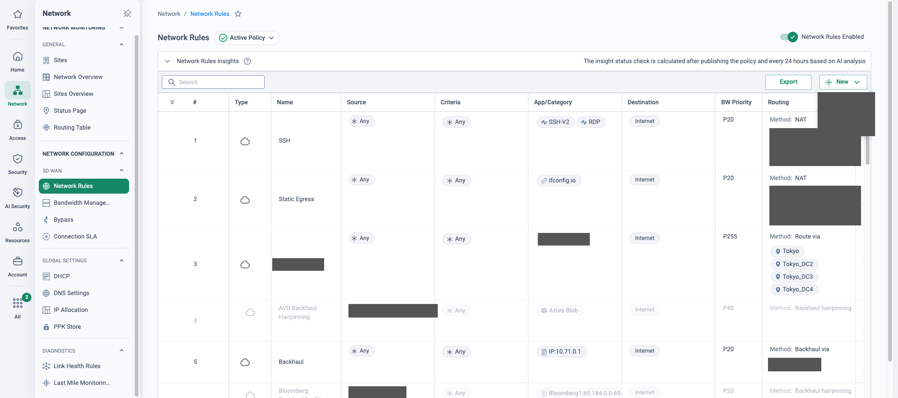

Why estates move off iboss
This page is authored from sourced vendor and Cato documentation research, not from a completed customer migration. Validate the plan with Cato Professional Services before using it in a customer engagement.
iboss began life as an appliance web filter for education and grew into a cloud security platform with a distinctive pitch: single-tenant, containerised gateways per customer, each egressing from dedicated source IPs. It is strongest in US K-12, libraries and government, where CIPA-compliance messaging and FedRAMP Moderate carry weight. Gartner's 2024 SSE Magic Quadrant placed it as a Niche Player — crediting aggressive availability and latency SLAs and low pricing, while flagging weak SaaS/API integrations, no SSPM and a customer base concentrated in North America. Peer reviews are broadly positive (4.8/5 across 131 reviews at research time) — treat individual complaints as anecdotes to probe, not blanket claims.
The structural driver is architectural: iboss was an SSE-only platform until it announced Zero Trust SD-WAN in May 2024. Estates that also need WAN transformation — MPLS replacement, site-to-site optimisation, a global backbone — have historically run iboss alongside a separate network vendor: two policy planes, two support paths, two renewals. Cato converges networking and security on one cloud-native platform in a single console, so an SD-WAN or firewall refresh, an MPLS expiry or an education re-procurement cycle is the moment a "filter renewal" becomes a platform consolidation conversation.
The second driver is operational: iboss steering leans on PAC files, explicit proxy settings and per-platform connectors. Years of PAC exceptions and bypass lists encode tribal knowledge that someone has to keep maintaining. Cato steers transparently — the Cato Client for roaming devices, a Socket or IPsec tunnel for sites — with no proxy configuration on the endpoint at all.
Four steering paths and one IP dependency
An iboss migration is first and foremost a steering migration. iboss documents four ways traffic reaches its cloud, and a mature estate usually runs several at once. Each one needs its own inventory, its own cutover mechanic and its own rollback lever.
Cloud connector agents Most common
Installed on managed devices: redirects traffic, authenticates the user, maps group policy and installs the iboss root MITM certificate for TLS inspection. Chromebooks are covered via a Chrome extension — which matters enormously in education fleets.
PAC files / explicit proxy Browser-level
Customer-hosted PAC scripts, distributed by GPO/MDM, proxy to iboss off-network and route direct or via local gateways on-network. The PAC and its exception list are both a migration liability and — kept alive — the cheapest rollback lever in the project.
GRE / IPsec tunnels Sites
From sites or SD-WAN edges, terminating on the public IPs of the customer's iboss gateway nodes — typically carrying guest, BYOD and IoT traffic that can't run an agent.
DNS redirection Lightweight
DNS-based filtering for zones where nothing heavier is deployed. Easy to forget in discovery, easy to leave orphaned after cutover — enumerate the zones explicitly.
Then there is the signature iboss feature: dedicated cloud source IPs. Because gateways are single-tenant, every customer egresses from IPs unique to them — and many have keyed SaaS tenant restrictions, exam/assessment platform allowlists and partner firewall rules to those IPs. Every one of those references must be found and dual-listed with Cato allocated IPs before any wave moves. Missing one is the classic "the migration broke X" incident.
"Which SaaS tenant restrictions, exam platforms and partner firewalls are keyed to your iboss dedicated IPs today — and does anyone own that list?" If the answer is a shrug, Phase 0 starts there.
What maps to what
Expect re-authoring, not import: category taxonomies, DLP engines and app catalogues all differ. The mapping below is the starting grid for the policy-conversion workshop.
| iboss component | Cato equivalent | Migration note |
|---|---|---|
| SWG / web filtering & malware defence | Internet firewall — URL categories, anti-malware, IPS; TLS inspection policy | Category taxonomies differ — map categories and exceptions rule-by-rule, don't assume 1:1 |
| SafeSearch / YouTube controls | Content Restrictions — SafeSearch plus YouTube Moderate/Strict | Cato documents a DoH caveat: browsers using DNS-over-HTTPS bypass Content Restrictions — control DoH via browser policy |
| Cloud connector agents (Windows/macOS/mobile) | Cato Client — Windows, macOS, Linux, iOS, Android via MSI + MDM/Intune | Transparent steering to the nearest PoP — no proxy config. Chromebook appears in Cato's Client OS list (KB re-checked Oct 2026) — validate the ChromeOS approach (see callout) |
| PAC files / explicit proxy settings | Transparent steering via Cato Client (roaming) or Socket/IPsec site (on-network) | PAC/GPO cleanup is part of cutover — but keep the PAC hosted during co-existence as the rollback lever |
| GRE/IPsec tunnels from sites | Cato Socket (X1500/X1700) or IPsec to the nearest Cato PoP | Sockets add last-mile HA, QoS and full WAN capability — a functional upgrade, not a tunnel swap |
| ZTNA / VPN replacement | Cato SDP — Private Access Policy, App Connector, clientless browser access | Rides the same Client and backbone as internet security — one agent, one policy plane |
| CASB (inline) | Cato CASB / Application Control policy | Gartner flagged iboss SaaS/API depth as a caution — compare app catalogues in discovery |
| DLP | Cato DLP — Data Control policy, 350+ content-profile data types | Rebuild profiles rather than exporting — engines and match logic differ |
| Browser Isolation | Cato RBI (Authentic8 engine) — "Isolate" action in web policy | Same pattern as iboss: isolation wired into policy actions alongside Allow/Block/Prompt |
| Dedicated cloud source IPs | Cato allocated IPs + NAT egress rules | Critical dependency — 3 IPs in the default licence, more via sales; dual-list before each wave |
| Reporter / logging & analytics | CMA events, analytics, user awareness; SIEM export | Education customers have statutory per-user reporting expectations — demo CMA user-level views early |
| Directory integration (Entra ID / Google / LDAP) | Cato SCIM provisioning (Entra ID, Okta, OneLogin) + Identity Agent | Google Workspace SCIM is not in Cato's documented list (see callout) |
Chromebook fleets: iboss covers Chromebooks via a Chrome extension. Cato's client-distribution documentation now lists “Android and Chromebook” among Client platforms (verified Jul 2026, re-checked Oct 2026) — an improvement on earlier documentation — but the ChromeOS deployment and management approach for a school fleet is still the first technical qualification question: agree it with Cato PS/product before committing a migration plan.
Google Workspace identity: Cato documents SCIM provisioning for Entra ID, Okta and OneLogin — Google Workspace is not on that list. Google-identity schools need an agreed identity design (SSO and provisioning path) validated in discovery. Do not hand-wave either of these.
Where this sits in the Cato SASE platform
- Both root CAs are deployed side by side first, so TLS inspection works in either direction.
- Wave 1 devices and the pilot site steer to the nearest PoP; later waves stay on PAC and connectors.
- SaaS allowlists carry both vendors' egress IPs; any wave rolls back by re-pointing to the hosted PAC.
Replace the steering, keep a way back
The pattern that de-risks the whole programme is wave-based steering cutover with PAC as the fallback rail. Both root CAs are deployed side by side before anything moves, so TLS inspection works in either direction. Then cohorts cut over per OU, year group or school — each device wholly on one vendor at a time, with the agent swap done atomically per device via MDM. The iboss PAC stays hosted and unchanged throughout: rollback for a browser-steered cohort is a single GPO/MDM change re-pointing to the old PAC.
Transparent steering, no PAC sprawl
The Cato Client and Sockets steer all traffic to the nearest PoP with no proxy configuration — the PAC exception list becomes history, not maintenance.
One console, network + security
SWG, TLS inspection, CASB, DLP, ZTNA and full SD-WAN in the CMA — the second policy plane and second support path go away.
Sockets are an upgrade, not a swap
Replacing a GRE/IPsec-to-proxy tunnel with a Socket adds last-mile HA, QoS and WAN optimisation the proxy tunnel never had.
Egress identity preserved
Cato allocated IPs plus NAT egress rules replace iboss dedicated cloud IPs — SaaS tenant restrictions keep working, dual-listed through the transition.
Five phases from PAC sprawl to PoP breakout
Anchored to Cato's published guidance — phased migration, pilot first, no big-bang cutover, with Cato and partner Professional Services assisting policy conversion. Timings are indicative for a mid-size estate; size Phase 3 to the number of schools/sites.
-
Phase 0 — Discover the steering estate weeks 1–2
Enumerate every path into iboss: PAC URLs and their GPO/MDM distribution scope, connector fleet by OS (including the Chromebook extension count), GRE/IPsec tunnels per site, DNS-redirection zones, and any proxy chaining from on-prem gateways. Export the policy base — categories, allow/block lists, per-group overrides, SSL bypass lists, CASB/DLP rules, ZTNA app definitions — and plan to re-author, not import. Build the dependency register: every SaaS tenant restriction and third-party allowlist keyed to iboss dedicated IPs, and anything pinned to the iboss root CA. Harvest the PAC and bypass lists as the seed for Cato TLS-inspection bypasses — the cheapest policy-mining asset in the project. Capture identity (Entra ID, Google Workspace, AD) and the per-OU policy tiers, then fix the Cato design inputs: PoP selection, Socket vs IPsec per site, allocated-IP count, TLS inspection scope.
-
Phase 1 — Build co-existence before touching steering weeks 2–4
Stand up the Cato account: sites, SCIM/identity integration, baseline Internet firewall and TLS inspection policy from Cato best practices, Content Restrictions for education tenants, and the recommended CASB/DLP starter policy. The critical move: push the Cato root certificate to all endpoints alongside the existing iboss root CA before any steering change — Cato documents the certificate as mandatory for TLS inspection, downloadable from the CMA and deployable via MDM. Removing the iboss CA comes last in the project, not first. Define which cohorts and sites steer where, and the rollback lever for each.
-
Phase 2 — Pilot one site and one agent cohort weeks 4–8
Pick a pilot that exercises the risky bits: one school/site with a tunnel — replaced by a Socket (preferred, adds HA/QoS) or IPsec to the nearest PoP — plus one roaming-agent cohort, IT staff first. Swap agents atomically per device via MDM: uninstall/disable the iboss connector and deploy the Cato Client in the same maintenance window per device ring. Never run both agents steering simultaneously — two TLS-intercepting redirection agents create hard-to-diagnose breakage. Validate category parity on a test URL list, TLS inspection, SafeSearch/YouTube enforcement, ZTNA app access, user-level reporting in the CMA, and SaaS logins from the new allocated egress IPs.
-
Phase 3 — Wave cutover per OU / school weeks 8–16
Cut over in waves aligned to the existing iboss group-policy tiers — per OU, year group or school — so filtering levels move with the cohort and safeguarding staff can verify each wave. Before each wave moves: add Cato allocated IPs to the wave's SaaS tenant restrictions and allowlists (run both vendors' IPs in parallel through the transition), re-point PAC-configured browsers to direct/Client steering, and retire the wave's tunnels. Re-point SIEM export and safeguarding/monitoring integrations as each wave completes.
-
Phase 4 — Optimise, then decommission in order weeks 16+
Tune policy from live CMA analytics, tighten TLS-inspection bypasses, and switch on the remaining services — RBI on uncategorised sites, DLP content profiles. Then decommission in strict order: (1) disable iboss steering — PAC distribution, connectors, tunnels; (2) remove iboss dedicated IPs from SaaS allowlists once logs show no residual use; (3) remove the iboss root CA from endpoints via MDM; (4) revoke iboss directory and SIEM integrations; (5) terminate the subscription only after archiving the full reporting-retention window — safeguarding logs are statutory evidence in education.
Every wave keeps a way back
PAC as the fallback rail
Keep the iboss PAC hosted and unchanged for the whole project. Rollback for any browser-steered cohort is then a single GPO/MDM change re-pointing to the old PAC — no re-install, no re-configuration.
Agent cohorts
Rollback = re-enable the iboss connector profile and remove the Cato Client via the same MDM ring used for deployment. Keep the iboss tenant licensed and its policies change-frozen until each wave is signed off.
Sites
Run the Cato Socket in-line while leaving the legacy tunnel-to-iboss configured but down. Rollback is re-enabling the tunnel and re-pointing the default route.
Certificates
Both root CAs are deployed side by side from Phase 1, so TLS inspection works in either direction during co-existence. CA removal is deferred to decommission — rollback never breaks HTTPS.
Per-user, per-OU waves keep each device wholly on one vendor at a time. Avoid any design where iboss handles some categories and Cato others for the same endpoint — two TLS-intercepting chains on one device is a support nightmare, not a migration strategy.
Success gates per wave: helpdesk ticket rate against baseline, category-parity spot checks, safeguarding-report continuity, and SaaS login success from the new egress IPs. A wave isn't done until all four hold.
Gotchas and objections
"iboss gives us CIPA-grade education filtering"
Cato documents Content Restrictions with SafeSearch and YouTube Moderate/Strict enforcement — demo it, and be upfront about the documented caveat: browsers using DNS-over-HTTPS bypass Content Restrictions, so DoH must be controlled via browser policy. For fine-grained Google-service controls, run a feature-parity check against the customer's actual iboss ruleset rather than asserting parity. UK schools: map requirements to DfE filtering-and-monitoring standards, not US CIPA language.
Per-user reporting expectations
Education and government customers use iboss reporting as safeguarding and compliance evidence. Show CMA user-level analytics and SIEM export during the pilot — and archive the iboss reporting history before terminating the subscription. Reporting continuity is a success gate, not an afterthought.
SaaS allowlists keyed to dedicated egress IPs
Every tenant restriction, partner firewall rule and exam-platform allowlist keyed to iboss IPs must be found and dual-listed with Cato allocated IPs before cutover. The default Cato licence includes 3 allocated IPs — size this early if the customer needs regional egress or more IPs.
"iboss is single-vendor SASE now too"
Its SD-WAN launched in May 2024, versus Cato's converged SD-WAN-plus-security platform operating since the mid-2010s and validated across the single-vendor SASE market. Probe the maturity of the SD-WAN estate: routing features, edge hardware ecosystem, global private backbone, last-mile HA.
"Per-tenant containers are more secure"
Acknowledge the architecture, then reframe on outcomes: what matters is inspection quality, policy convergence and operations. Gartner's caution that iboss depth in SaaS/API security lags is the counterweight to the container story.
Latency and SLA comparison
iboss publishes seven-nines availability and a 100 ms latency SLA. Do not counter with invented numbers — position Cato's PoP proximity, private backbone and published uptime commitments, and prove latency empirically in the pilot.
Typical education policies — a starter rulebase
The mapping and phased path above get you to a translated policy; this is what a good one looks like once it lands. The worked before→after translation of a single Students/Staff tier lives on the iboss Policy Migration page — this section is the fuller destination blueprint: a starter Cato rulebase for a school or multi-academy trust, the shape most education estates converge on once the per-OU tiers are rationalised.
It is a starting grid, not a drop-in. Cohorts — year groups, phases, staff tiers, the sixth form — become SCIM groups; the rules sit in one ordered Internet firewall policy, most-specific cohort first; and every rule below lands in monitor for its OU wave before any block or prompt goes live, the same monitor-first discipline as the steering cutover.
The rulebase below is illustrative, not a compliance template. Deploy it monitor-first, one OU wave at a time, and align every decision to the institution's own safeguarding and acceptable-use policy and to the filtering-and-monitoring expectations UK schools work to — KCSIE-style safeguarding duties and the DfE filtering-and-monitoring standards — as design intent, not a statutory checklist. The safeguarding lead signs off the category and prompt/block choices, not just IT.
| # | Name | Source (group) | App/Category / Content Restrictions | Action | Track |
|---|---|---|---|---|---|
| 1 | Safeguarding-risk block — all pupils | Students + Sixth-form (SCIM groups) | URL categories: adult/pornography, weapons, self-harm & pro-suicide content — map to the nearest Cato categories in the parity workshop, don't assume 1:1 | Block | Event |
| 2 | Students — SafeSearch + YouTube restricted | Students (SCIM group) | Content Restrictions — SafeSearch enforced; YouTube Moderate (Strict for lower phases)* | Enforce | Event |
| 3 | Sixth-form — differentiated relaxation | Sixth-form (SCIM group) | Social Networking & Streaming allowed; sits above the student social-media rule so the group matches first | Allow | Event |
| 4 | Students — social media, teach-not-just-block | Students (SCIM group) | URL category: Social Networking — Prompt with an acceptable-use notice for KS3–KS4; Block for lower phases by cohort | Prompt | Event |
| 5 | Staff — broad allow, DLP guardrail | Staff (SCIM group) | Broad web allow; Data Control — student-PII / safeguarding-record content profile on uploads to personal cloud storage (personal Google Drive, OneDrive, Dropbox) | Allow · Block upload | Event |
| 6 | Exam cohort — allowlist-only (exam window) | Exam-cohort (SCIM group) | Allowlist-only posture: exam/assessment-platform domains permitted, all else blocked — operational practice, enabled for the exam window and reverted after | Allowlist-only | Event |
| 7 | BYOD / guest — isolated segment | Guest & BYOD network | Internet-only with student-grade content filtering; no route to internal apps or staff resources — segment isolated from the managed estate | Allow (filtered) | Event |
| 8 | IT admins — ZTNA-scoped access | IT-Admins (SCIM group) | Private Access policy — scoped admin apps only, no broad network reach; broad web allow for the group's own browsing | Allow (ZTNA-scoped) | Event |
* Content Restrictions are bypassed by browsers using DNS-over-HTTPS — ship the DoH control (browser management policy plus the DNS-over-HTTPS block in the Internet firewall) in the same change, per the DoH caveat in Gotchas. Every rule tracks Event: user-attributed logging is the safeguarding evidence that has to survive the migration.
Education scenarios
- Safeguarding incident review. When a concern is raised, the designated safeguarding lead needs a per-user trail fast — Monitor → Events filtered to one pupil across web, search and blocked-category hits, exportable and retained. The Event tracking on every rule above is what makes that trail exist; it is reporting continuity carried across from iboss, not a nice-to-have.
- Exam-season lockdown. For the exam window the exam-cohort group flips to the allowlist-only rule — assessment platforms permitted, everything else blocked — then reverts afterwards. One scoped rule change per window, with the block already proven in monitor so no candidate meets a surprise deny mid-exam.
- New academy joining a trust. Onboarding a school into a multi-academy trust is policy inheritance, not a rebuild: add the site/Socket, map the new OUs onto the trust's existing SCIM groups, and this ordered rulebase applies on day one, with local exceptions layered as scoped rules above it. One policy plane across every academy instead of a filter tenant per school.
- Filtering-review evidence. An Ofsted-style filtering-and-monitoring review — or a governor/DSL audit — asks the school to show what is filtered, for whom, and how incidents are recorded. The CMA answers it live: the ordered rulebase is the "what and for whom", user-attributed events are the "how recorded" — evidence on screen rather than a vendor report request.
How to prove it in the customer's tenant
An iboss estate is too entangled to PoV whole — years of PAC exceptions, per-OU tiers and IP-keyed allowlists don't move in a fortnight. The pilot that de-risks the decision is a bounded proxy-exit exercise: one cohort — say, the central-team staff of a multi-academy trust, or one school's staff OU — swapped from iboss PAC/agent steering to the Cato Client, plus one pilot site given socket breakout in place of its GRE/IPsec tunnel. Education-grade content controls are proven at parity in monitor mode, iboss stays authoritative for every other user and school, and the hosted PAC remains the way back throughout. Run it under the discipline of the PoV framework: agree the success criteria below with the customer — and the safeguarding lead — before anything is configured, and book the decision meeting the same day.
Monitor-first discipline means nothing blocks until events prove it — which is exactly why pupils stay out of scope. Safeguarding filtering for pupils must never run monitor-only, so pupil waves follow later, on category rules whose verdicts this pilot has already evidenced. A staff cohort exercises the same steering, inspection and policy machinery without ever thinning the pupil filter.
Success criteria
Every row's artefact goes into a dated evidence pack, exported as it lands — the wrap-up reads the pack, not memories.
| Success criterion | Evidence artefact | Where it lives |
|---|---|---|
| Every pilot device connects through the Cato Client with the iboss connector disabled, and its user is identified by name from the synced SCIM group | Connected cohort list with device, Client version and PoP; one event attributed to a named user | Access → Users · Monitor → Experience Monitoring |
| Safeguarding-category parity — the agreed test URL list returns the intended verdict on Cato, in monitor, matching the iboss action for the same tier | Events filtered to the translated rules, verdict by verdict beside the iboss report for the same list | Monitor → Events (Internet firewall) |
| SafeSearch and YouTube restricted mode enforced for the cohort, with DNS-over-HTTPS controlled so the enforcement holds | Screen evidence of forced SafeSearch and restricted YouTube on a cohort device, plus the DoH control change record | Security → IPS (Content Policy) · Monitor → Events |
| TLS inspection live for the pilot group — certificate deployed via the management tooling, no certificate-error tickets from the cohort | Inspect rule scoped to the pilot group; inspected-traffic events; empty cohort helpdesk queue | Security → TLS Inspection · Monitor → Events |
| SaaS and exam-platform logins succeed from the new egress — Cato allocated IPs dual-listed beside iboss IPs before the swap, zero lockouts | Login test record per allowlisted platform; egress rule showing the allocated-IP NAT binding | Network → IP Allocation · Network → Network Rules |
| Rollback proven, not promised — one cohort device re-pointed to the hosted PAC / re-enabled iboss agent profile and back, timed | Rollback drill record: change, elapsed minutes, device filtering via iboss again | MDM/GPO change log + Monitor → Events (traffic ceases) |
- Success criteria signed off — by the safeguarding lead as well as IT — and the decision meeting booked, per the PoV framework.
- Licences and modules confirmed for everything under test: Client/SDP seats for the cohort, the pilot-site Socket, TLS inspection and allocated IPs.
- Identity integration connected with the pilot group provisioned over SCIM and visibly syncing before any rule references it — Cato documents SCIM for Entra ID, Okta and OneLogin; Google-identity schools need the identity design agreed first (see the qualification callout in component mapping).
- TLS inspection staged first: Cato root certificate pushed via the existing MDM/GPO tooling alongside the iboss CA — neither CA is removed (see TLS Inspection: Staged Rollout Playbook).
- Scope is staff Windows/macOS devices plus one pilot site. Chromebook fleets stay wholly on iboss for the pilot — the ChromeOS approach is a qualification item, not a pilot variable.
- The iboss PAC stays hosted and change-frozen, and iboss stays authoritative for everyone outside the cohort — nothing here touches the wider estate's steering.
Configuration walkthrough
-
Provision the cohort's identity and prove the group syncs
Access → Directory Services Access → Users
Create the pilot group in the IdP and provision it over SCIM — membership changes sync in near real time, and every policy rule in this runbook scopes to this group. Confirm the members appear in Access → Users before building anything else: a group that hasn't synced means rules that silently never match.
-
Connect the pilot site with a Socket, tunnel left as the way back
Network → Sites
Replace the pilot site's GRE/IPsec-to-iboss tunnel with a Socket site — native range, WAN links and bandwidth set per the site licence. Leave the legacy tunnel configured but down on the site firewall: site-level rollback is re-enabling it and re-pointing the default route, exactly as the co-existence section above describes.
-
Stage TLS inspection — certificate first, bypasses second, inspection last
Security → TLS Inspection
Push the Cato root certificate to cohort devices through the same MDM/GPO channel that manages the iboss CA — Cato documents that it must be installed on every device whose traffic is inspected. Seed bypass rules from the harvested iboss SSL and PAC exception lists — certificate-pinned applications must be bypass rules, placed above any Inspect rule, and Cato bypasses Android, Linux and unidentified operating systems automatically. Then add one Inspect rule scoped to the pilot SCIM group. When inspection is first enabled the CMA adds Internet firewall rules blocking QUIC/GQUIC automatically — leave them in place, since QUIC traffic can't be inspected.
-
Translate the cohort's web tier — monitor-first
Security → Internet Firewall
Recreate only the rules the cohort's iboss tier actually hits, scoped to the pilot group as source, with Track = Event on every rule — events are the evidence. Cato's Internet firewall ends in an implicit any-any allow, so unmatched traffic behaves as it does today; the safeguarding categories land as monitor rules whose events prove the verdicts, with blocks armed only against the agreed test URL list on a test device. The full construct-by-construct translation — and the per-OU tier ladder this pilot is one rung of — lives on iboss Policy Migration.
-
Enable Content Restrictions and control DoH in the same change
Security → IPS
On the Content Policy tab, enforce SafeSearch for Google and Bing and set YouTube to Moderate or Strict to match the cohort's iboss tier. Two documented boundaries to state up front: browsers using DNS-over-HTTPS bypass these restrictions, so ship the DoH browser policy and the DoH block with this change, not after the first bypass — and Content Restrictions act on search engines, not on direct browsing, which is what the category rules in the previous step are for.
-
Dual-list the egress IPs before anything swaps
Network → IP Allocation Network → Network Rules
Allocate Cato IPs — the count is licence-determined, and best practice is two from different PoPs for failover — and bind them to the cohort's egress with a network rule using NAT. Then add those IPs to every SaaS tenant restriction, exam-platform allowlist and partner firewall rule the dependency register found for this cohort — alongside the iboss dedicated IPs, never replacing them. Test one login per platform before the swap.
-
Swap the cohort's steering — atomically, per device
Access → Users
Through the same GPO/MDM channel that deployed the iboss connector: disable the iboss agent profile, clear the PAC/proxy setting, and install the Cato Client — in one maintenance window per device ring, so no device ever runs two TLS-intercepting agents at once. The hosted PAC itself stays untouched: it is the rollback rail, not part of the change.
-
Run the parity fortnight and build the evidence pack
Monitor → Events
Walk the agreed test URL list with a cohort user; run the SafeSearch, YouTube and exam-platform login checks; then filter Events to the pilot group and the translated rules, confirm each verdict is attributed to a named user and rule, and export the filtered view as a dated CSV per criterion — a single export carries up to 250,000 events. Close the pack with the rollback drill: one device back to the PAC, timed, and forward again.
What good output looks like




Troubleshooting the pilot
Two agents on one device
If a swapped device still shows the iboss connector active, the swap didn't complete — two TLS-intercepting agents produce breakage that looks like anything but its cause. Finish the removal via the MDM ring before reading any parity events.
PAC remnants
A browser or GPO still pushing the iboss PAC after the swap sends traffic to the old proxy — or silently around Cato. Check the device's proxy settings; the PAC setting is cleared in the same change as the agent swap even though the PAC file stays hosted for rollback.
SafeSearch not enforcing
Almost always DNS-over-HTTPS: Cato documents that DoH-enabled browsers bypass Content Restrictions. Confirm the browser DoH policy landed and the DoH block is live; then clear DNS and browser caches, which the KB recommends on first enablement.
Pinned education apps break under TLSi
MIS clients, exam-platform lockdown browsers and other pinned apps fail the moment inspection touches them. Certificate-pinned applications must be TLS bypass rules, above the Inspect rule — the harvested iboss SSL bypass list says which ones, and TLSi error events confirm any it missed.
Cohort rules never match
SCIM sync lag, or a user connecting before identity attaches, means group-scoped rules silently never fire and the device falls through to the implicit allow. Verify membership in Access → Users and prove one event attributes to a named pilot user before the parity fortnight starts.
Exam-platform lockout
A platform allowlist still keyed only to iboss dedicated IPs locks the cohort out the moment egress moves to the Cato PoP. Sweep the dependency register again, confirm the allocated-IP NAT rule is the cohort's egress path, and re-test logins — before an exam window, never during one.
Gotchas & the exit plan
- Parity means intent, not identical counts. The iboss and Cato category taxonomies do not line up one-to-one — judge the agreed test URL list verdict by verdict, never by comparing event volumes.
- Content Restrictions are search-engine controls. SafeSearch and YouTube enforcement act on Google, Bing and YouTube — direct browsing to unsuitable sites is the category rules' job, and DoH must stay controlled for either to hold.
- Pupils are out of scope by design. This pilot proves the machinery on staff devices; pupil cohorts move only in later waves, onto blocks already evidenced — monitor-only pupil filtering is never acceptable.
- Chromebooks and Google identity are qualification items. Neither is resolved by this pilot — carry both through the discovery callouts above and agree the approach with Cato PS before any pupil-fleet commitment.
- Evidence windows. An Events query spans at most 31 days — export weekly as the framework prescribes, rather than reconstructing at wrap-up.
- Reporting continuity. For everyone outside the cohort, iboss remains the statutory safeguarding record throughout — nothing is archived or terminated during a pilot.
If the pilot passes, nothing is thrown away: the translated rules are the first wave's policy, the pilot group widens per OU along the phased path above, and the evidence pack becomes the safeguarding lead's sign-off artefact for the pupil waves. If it must unwind, revert in reverse order: re-point browser-steered devices to the hosted PAC and re-enable the iboss agent profile through the same MDM ring (filtering returns to iboss immediately), re-enable the pilot site's legacy tunnel and re-point its default route, and set the Cato rules back to monitor — disable rather than delete, because the translation work remains an asset for the real migration. Both root CAs stay where they are — certificate removal was never part of the pilot, so rollback never breaks HTTPS. The cohort lands exactly where it started: PAC-steered, iboss-filtered, decision de-risked.
Resources
Documentation
- Getting Started with Cato Certificates (KB)
- Best Practices for TLS Inspection (KB)
- Content Restrictions — SafeSearch & YouTube (KB)
- Installing the Cato Client — OS support (KB)
- Allocating IP Addresses for the Account (KB)
- Provisioning Users with SCIM (KB)
- How to Implement SASE — migration checklist
- iboss — Dedicated Cloud IPs (the egress-IP dependency)